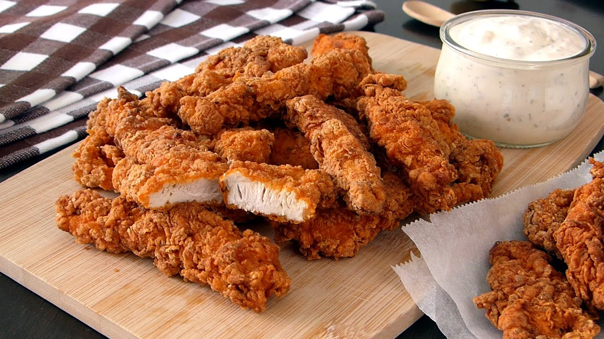

Chicken tenders

Chicken tenders are white meat and besides being smaller than the breast, taste exactly the same as breast meat and are tender and moist when cooked properly. Sometimes chicken tenders can be separately sold from the breasts, making them great candidates for stir-fries and skewers
Chicken tenders the dish, sometimes also called chicken fingers or chicken strips, are chicken tenders that are breaded and deep fried, which explains why the two are synonymously named.
Ingredients
- Cooking spray
- 2 cups panko bread crumbs
- 1 teaspoon garlic powder
- 1/4 teaspoon chili powder
- 1/4 teaspoon salt
- 1/4 teaspoon ground black pepper
- 1 large egg
- 2 skinless, boneless chicken breasts, cut into 1-inch strips
Steps
- Step 1
Preheat the oven to 375 degrees F (190 degrees C). Spray a baking sheet with cooking spray
- Step 2
Mix panko, garlic powder, chili powder, salt, and pepper together well.
- Step 3
Beat egg in a shallow bowl. Dip chicken tenders into the egg mixture, then dredge in the panko mixture. Arrange on the prepared baking sheet.
- Step 4
Bake in the preheated oven until crispy on the outside and lightly browned, 10 to 12 minutes.